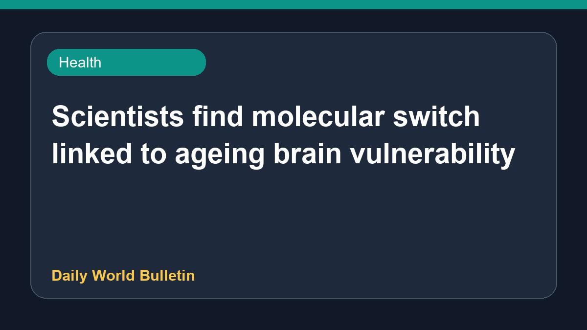

Scientists find molecular switch linked to ageing brain vulnerability

Recent scientific findings suggest that researchers have identified a specific molecular switch which may help explain why the ageing brain becomes increasingly vulnerable to severe conditions such as amyotrophic lateral sclerosis. This discovery sheds light on the hidden triggers associated with neurological decline as people grow older. While details remain limited regarding potential treatments, understanding this underlying mechanism could pave the way for future studies on age-related brain diseases and potential therapeutic interventions.
Original source: Health News Sources
Explained: Have Scientists Found What Makes the Ageing Brain Vulnerable to Diseases Like ALS? - Open Magazine ↗
Explained: Have Scientists Found What Makes the Ageing Brain Vulnerable to Diseases Like ALS? - Open Magazine ↗